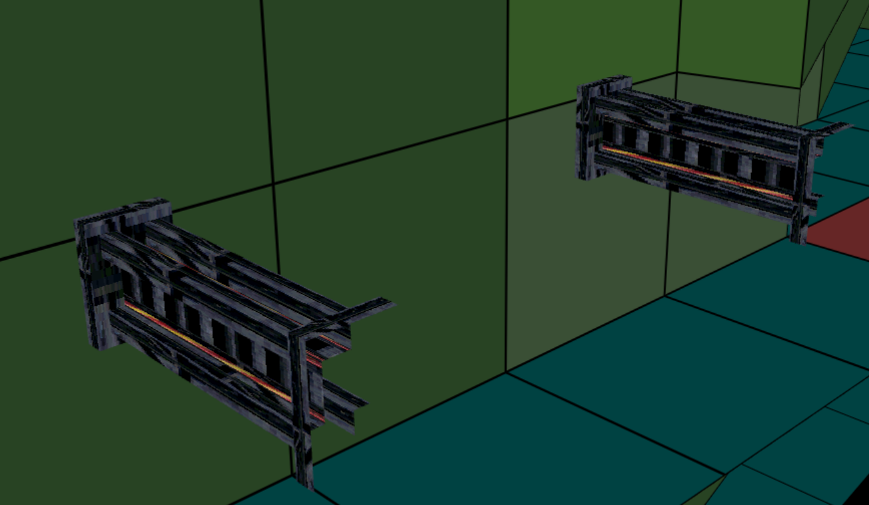

This plugin it's the main source of fixes and additions along with FLEP.
The new additions are the following:
Brings back the original bridges used in TR4, as TRNG bridges have incompatible behaviour.
To use this, AssignSlot= command is needed.
Syntax: AssignSlot=<MyUsedSlot>, <Bridge>
Where <MyUsedSlot> is the slot that should be used for the bridge and <Bridge> is either OBJ_FLEP_BRIDGE_FLAT, OBJ_FLEP_BRIDGE_TILT1 or OBJ_FLEP_BRIDGE_TILT2.
Example: AssignSlot=ANIMATING1, OBJ_FLEP_BRIDGE_FLAT
Implements the lift doors from TR5.
To use this, AssignSlot= command is needed.
Syntax: AssignSlot=<MyUsedSlot>, <LiftDoor>
Where <MyUsedSlot> is the slot that should be used for the lift door and <LiftDoor> is either OBJ_FLEP_LIFT_DOORS1 or OBJ_FLEP_LIFT_DOORS2.
Example: AssignSlot=ANIMATING1, OBJ_FLEP_LIFT_DOORS1.
Additional customization can be done by the command Customize=CUST_FLEP_LIFT_DOORS.
Syntax: Customize=CUST_FLEP_LIFT_DOORS, LiftDoorsSound
LiftDoorsSound: this parameter sets the sound that plays when the lift doors open or close.
Type IGNORE or -1 to not play any sound.
Example: Customize=CUST_FLEP_LIFT_DOORS, 64
Replaces Crossbow with HK Gun from TR5.
Important: make sure to enable HK Gun patch inside FLEP or the following settings won't work.
Syntax: Customize=CUST_FLEP_HK, GunFlashSlot, FireSound, StopSound, SniperOrder, BurstOrder, RapidOrder, FirstModeSlot, SecondModeSlot, ThirdModeSlot, StillHipsFire
GunFlashSlot: this parameter sets the slot of the gunflash.
Type IGNORE or -1 to use the default value (GUN_FLASH).
FireSound, StopSound: these parameters sets the sounds that play when HK is firing and when it stops firing, respectively.
Type IGNORE or -1 to not play any sound. The FireSound must have L flag set.
SniperOrder, BurstOrder, RapidOrder: these parameters sets the sequence in which the modes should be selected in the Choose Weapon Mode menu.
Type IGNORE or -1 to use the default values (1 for SniperOrder, 2 for BurstOrder and 3 for RapidOrder).
FirstModeSlot, SecondModeSlot, ThirdModeSlot: thes parameters sets the slots that should be used for the modes in the Choose Weapon Mode menu.
Type IGNORE or -1 to use the default values (CROSSBOW_AMMO1_ITEM for FirstModeSlot, CROSSBOW_AMMO2_ITEM for SecondModeSlot and CROSSBOW_AMMO3_ITEM for ThirdModeSlot).
StillHipsFire: this parameter allows ENABLED or DISABLED.
ENABLED: if Lara stops moving while shooting from her hips, she does not change the HK to her shoulder.
DISABLED: if Lara stops moving while shooting from her hips, she changes the HK to her shoulder.
Type IGNORE to use the default value (DISABLED).
Example: Customize=CUST_FLEP_HK, NEW_SLOT10, 370, 371, -1, -1, -1, -1, -1, -1, ENABLED
Implements objects that always face the camera, as sprites do.
To use this, AssignSlot= command is needed.
Syntax: AssignSlot=<MyUsedSlot>, <Sprite>
Where <MyUsedSlot> is the slot that should be used for the sprite and <Sprite> is OBJ_FLEP_SPRITE{1..16}.
If the object has more than one mesh, they will be cycled through, like animated sprites.
Example: AssignSlot=ANIMATING1, OBJ_FLEP_SPRITE1
Provides the rollingballs from TR1/2/3.
Important: the rollingballs from original levels will not work, use these ones instead: https://www.trsearch.org/item/5823.
To use this, AssignSlot= command is needed.
Syntax: AssignSlot=<MyUsedSlot>, <Rollingball>
Where <MyUsedSlot> is the slot that should be used for the rollingball and <Rollingball> is OBJ_FLEP_ROLLINGBALL{1..16}.
Example: AssignSlot=NEW_SLOT5, OBJ_FLEP_ROLLINGBALL1
Additional settings can be used, you can also sum these together:
Use OCB 1 to disable the camera bounce effect.
Use OCB 32 to produce a splash if the rollingball falls into water.
Note that the rotation of the rollingball determines their rolling direction.
Allows Lara meshes to be swapped.
To use this, Parameters=PARAM_FLEP_LARA_MESHSWAP command is needed.
Syntax: Parameters=PARAM_FLEP_LARA_MESHSWAP, IdParamList, LaraMesh, SourceSlot, SourceMesh
IdParamList: this parameter sets the ID of the meshswap command, which is then used in the trigger.
The ID range goes from 1 to 256.
LaraMesh: this parameter sets the mesh to be swapped, see LARA_MESH_ constants or type the mesh number.
SourceSlot: this parameter sets the slot that supplies the new mesh. Both the slot name or number can be typed.
SourceMesh: this parameter sets the the number of the new mesh.
Example: Parameters=PARAM_FLEP_LARA_MESHSWAP, 1, LARA_MESH_HEAD, NEW_SLOT10, 0
To trigger a meshswap:
#define @Plugin_FLEP 1
TriggerGroup=<TriggerGroupId>,$012000,7,<IdParamList>
#define @plugins CLEAR
Where <TriggerGroupId> is the ID of the TriggerGroup (for example 1,10,25...) and <IdParamList> is the Id of the command Parameters=PARAM_FLEP_LARA_MESHSWAP.
Example:
#define @Plugin_FLEP 1
TriggerGroup=1,$012000,7,1
#define @plugins CLEAR
And to revert a meshswap:
#define @Plugin_FLEP 1
TriggerGroup=<TriggerGroupId>,$012000,8,<LaraMesh>
#define @plugins CLEAR
Where <LaraMesh> is a LARA_MESH_ constant, the mesh number can be also typed.
Example:
#define @Plugin_FLEP 1
TriggerGroup=2,$012000,8,14
#define @plugins CLEAR
Exits the game in the same moment it is called.
To exit the game:
#define @Plugin_FLEP 1
TriggerGroup=<TriggerGroupId>,$012000,9,$0
#define @plugins CLEAR
Where <TriggerGroupId> is the ID of the TriggerGroup (for example 1,10,25...)
Example:
#define @Plugin_FLEP 1
TriggerGroup=1,$012000,9,$0
#define @plugins CLEAR
Modifies the Grenadegun to shoot different types of grenades or crossbow bolts, also its animations.
Important: make sure to enable Grenadegun and ammo animations patch inside FLEP or the following settings won't work.
To use this, Customize=CUST_FLEP_GRENADEGUN command is needed.
Syntax: Customize=CUST_FLEP_GRENADEGUN, GrenadegunAnimations, FirstAmmoWeapon, SecondAmmoWeapon, ThirdAmmoWeapon, FirstAmmoType, SecondAmmoType, ThirdAmmoType, FirstAmmoSlot, SecondAmmoSlot, ThirdAmmoSlot, FirstAmmoSound, SecondAmmoSound, ThirdAmmoSound, FirstAmmoSmoke, SecondAmmoSmoke, ThirdAmmoSmoke
GrenadegunAnimations: this parameter sets the usage or not of Grenadegun animations
ENABLED: allows the usage of Grenadegun animations.
DISABLED: allows the usage of Crossbow, Shotgun or HK animations.
Type IGNORE or -1 to use the default value (ENABLED).
FirstAmmoWeapon, SecondAmmoWeapon, ThirdAmmoWeapon: these parameters sets the type of bolt.
HOLD_CROSSBOW: the ammo is a bolt.
HOLD_GRENADEGUN: the ammo is a grenade.
Type IGNORE or -1 to use the default value (HOLD_GRENADEGUN).
FirstAmmoType, SecondAmmoType, ThirdAmmoType: these parameters sets the type of ammo.
1: Normal ammo.
2: Poison/Super ammo.
3: Explosive/Flash ammo.
Type IGNORE or -1 to use the default values (1 for FirstAmmoType, 2 for SecondAmmoType and 3 for ThirdAmmoType).
FirstAmmoSlot, SecondAmmoSlot, ThirdAmmoSlot: these parameters sets the slots containing the meshes of the ammos.
Type IGNORE or -1 to use the default value (CROSSBOW_BOLT/GRENADE).
Note: CROSSBOW_BOLT is forbidden if the ammo is a grenade and GRENADE is forbidden if the ammo is a bolt.
FirstAmmoSound, SecondAmmoSound, ThirdAmmoSound: these parameters sets the sounds that play when shooting the ammos.
Type IGNORE or -1 to not play any sound.
FirstAmmoSmoke, SecondAmmoSmoke, ThirdAmmoSmoke: these parameters sets whether the Grenadegun smoke is produced or not when shooting.
ENABLED: Grenadegun smoke is produced when shooting.
DISABLED: no smoke is produced.
Type IGNORE or -1 to use the default value (ENABLED).
Example: Customize=CUST_FLEP_GRENADEGUN, ENABLED, HOLD_CROSSBOW, -1, -1, 3, 2, 1, -1, CROSSBOW_BOLT, -1, -1, -1, -1, ENABLED, ENABLED, DISABLED
Allows to use the Minecart object like TR3 with some additions.
Important: make sure to enable Mine Cart patch inside FLEP or the following settings won't work.
Minecart controls
The minecart controls are the following:
Setting the commands
Each script command of the minecart starts with Customize= command, followed by these types of customization: CUST_FLEP_MINE_CART and CUST_FLEP_MINE_CART_TRAPS.
CUST_FLEP_MINE_CART
This is the main command that associates an existing TRNG slot to a required minecart item.
Syntax: Customize=CUST_FLEP_MINE_CART, CartSlot, LaraSlot, ControllerSlot, SwitchSlot, ClunkStartSound, FrontImpactSound, SreechBrakeSound, TrackLoopSound, PullyLoopSound, Alignment
CartSlot: this parameter sets the slot where the minecart object is stored inside your wad.
LaraSlot: this parameter sets the slot where Lara's minecart special animations object is stored inside your wad.
ControllerSlot: this parameter sets the slot where the nullmesh object to manipulate the direction of the minecart is stored inside your wad.
SwitchSlot: this parameter sets the slot where the minecart switch object is stored inside your wad.
ClunkStartSound: this parameter sets the sound ID when the minecart starts moving.
FrontImpactSound: this parameter sets the sound ID when the minecart hits a wall.
SreechBrakeSound: this parameter sets the sound ID when Lara brakes the minecart.
TrackLoopSound: this parameter sets the sound ID when the minecart moves fast.
PullyLoopSound: this parameter sets the sound ID when the minecart moves slowly.
Alignment (ENABLED/DISABLED): this parameter, set as ENABLED, will align the minecart in case the floor is tilted (unlike the original TR3 game).
This is an example script using the given wad slots and TR3 ID sounds inside the package.
Example: Customize=CUST_FLEP_MINE_CART, MINE_CART, MINE_CART_LARA, TRIPWIRE, ANIMATING2, 211, 202, 219, 209, 210, ENABLED
You can also just write the IDs of the slots:
Customize=CUST_FLEP_MINE_CART, 504, 505, 161, 429, 211, 202, 219, 209, 210, ENABLED
Notes:
CUST_FLEP_MINE_CART_TRAPS
This command associates a trap with the minecart.
Syntax: Customize=CUST_FLEP_MINE_CART_TRAPS, TrapSlot, HealthLoss, {TrapSlot, HealthLoss array}
TrapSlot: this parameter sets which slot hurts Lara when using the minecart
HealthLoss: this parameter sets the amount of health loss that Lara receives when the minecart collides with the above slot, by setting this to IGNORE the defeault health loss it's 8.
Lara's health is measured in 1000 units, so setting it to the max amount will make her die.
{TrapSlot, HealthLoss array}: this is the exact operation explained above, it's the pair of slot and health loss that each different trap causes to Lara.
Example: Customize=CUST_FLEP_MINE_CART_TRAPS, TEETH_SPIKES, 200, ROLLINGBALL, 1000
Note: it's possible to set up to 16 different traps slots and health losses, by typing IGNORE on.
Minecart triggers
You can check whether Lara is in the minecart or not by using the following inside your script:
#define @Plugin_FLEP 1
TriggerGroup=<TriggerGroupId>,$018000,0,$2,<ExportedTrigger>
#define @plugins CLEAR
Where <TriggerGroupId> is the ID of your TriggerGroup (for example 1,10,25...) and where <ExportedTrigger> is the trigger or group of triggers that needs to activate when the condition it's true (for example the track that plays in TR3 when you get in the minecart).
You can of course also use this inside a GlobalTrigger, here's an example:
#define @Plugin_FLEP 1
TriggerGroup=1,$018000,0,$2 ;lara is inside the minecart
TriggerGroup=2,$2000,129,$79 ;play track
GlobalTrigger=1,FGT_SINGLE_SHOT,GT_CONDITION_GROUP,IGNORE,1,2,IGNORE
#define @plugins CLEAR
Setting up the minecart
Place the minecart in the direction you want, the front is where you see the brake handle.
Whenever you want the cart to turn use the nullmesh ControllerSlot, the point of the cone is the direction of where the minecart needs to turn.
To stop the minecart, turn the point of the cone against its direction.
You can use statics as obstacles to hurt Lara during the track.
To change the track direction of the minecart, use the SwitchSlot item along with the ControllerSlot nullmesh.
To set it up, place a switch type trigger for the switch itself, then use an Action 11 (A11) or Action 12 (A12) trigger to instantly turn the ControllerSlot nullmesh to the desired rotation.
Note: in this setup it's better to set the switch type trigger as One Shot, or Lara will be able to pull the already activated switch.
In this example the ControllerSlot nullmesh rotates to the left (inverse clockwise) using Action 12 (A12).
You can choose which minecart takes which track using OCB codes.
To do so, MinecartSlot and every instance of the ControllerSlot which need to take a specific track must have the same OCB code.
Additional notes: sometimes it's possible that if the player uses the switch too late, the minecart won't change the track direction in time.
In these situations, there are two options you can look forward to:
Brings back the original trapdoors behavior used in TR1-3, they can be also placed away from portals.
Drawbridges (or trapdoors of 1x2 squares) are included.
In order to activate their collision, a Dummy trigger type is needed under the trapdoor object.
To use this, AssignSlot= command is needed.
Syntax: AssignSlot=<MyUsedSlot>, <Trapdoor>
Where <MyUsedSlot> is the slot that should be used for the bridge and <Trapdoor> is OBJ_FLEP_TRAPDOOR{1..16}.
Example: AssignSlot=ANIMATING1, OBJ_FLEP_TRAPDOOR1
Allows the continuous rotation of the horizon.
Important: make sure to enable Horizon rotation patch inside FLEP or the following command won't work.
To use this, Customize=CUST_FLEP_HORIZON_ROTATE command is needed.
Syntax: CUSTOMIZE=CUST_FLEP_HORIZON_ROTATE, Speed
Speed: the speed (in rotation units) at which the Horizon rotates. Positive values are clockwise.
Type DISABLED to not rotate the Horizon.
Note: 182 rotation units are equivalent to one degree.
Example: Customize=CUST_FLEP_HORIZON_ROTATE, 10
The "duckcrawl" animation states replace the classic "on-all-fours" crawling. They are enabled with the Enable duckcrawl anim states FLEP patch. These animation states behave like a mix between the duck/crouch state (71) and the crawl states (80, 81, 84-86), effectively eliminating the distinction between ducking and crawling. This allows for more fluid transitions between running, ducking and crawling, additionally permitting Lara to draw and shoot weapons or carry torches while in the duckcrawl anim states.
In order to cooperate with the duckcrawl patch, the animations in the LARA object need to be set up in a specific way. The existing animations in LARA will be marked with BLUE, while extra animations you have to add will be marked with RED. StateID numbers will be marked with GREEN.
Here is the list of changes to make to the animations in your LARA. Unless stated otherwise, the listed changes are required:
A set of animations which adhere to the above list has been made by GeckoKid. They can be downloaded from this link.
GeckoKid has kindly given permission to use these animations in your custom levels, but please give credits to him if you do so!